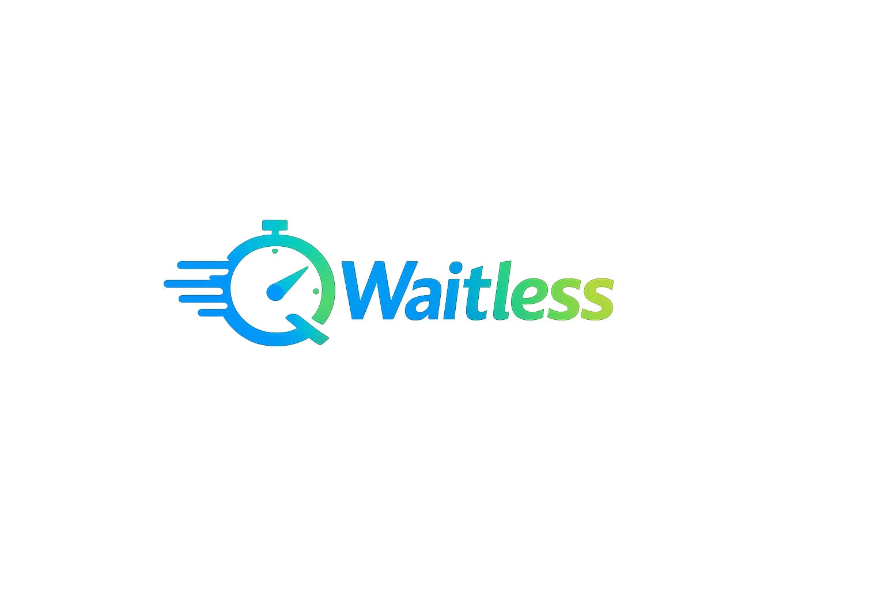

Superadmin
Platform administration
Use the same secure sign-in. Superadmin accounts are routed to approvals and organization management.

WaitlessSuperadmin
Use the same secure sign-in. Superadmin accounts are routed to approvals and organization management.